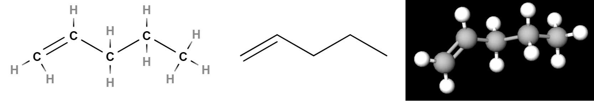
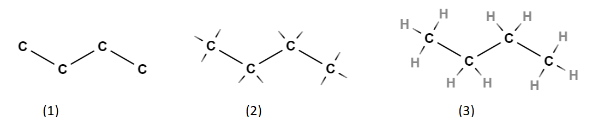
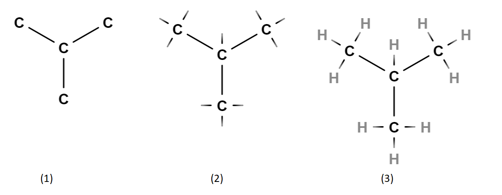
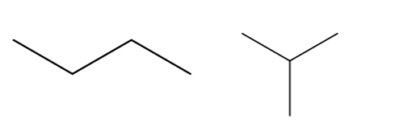
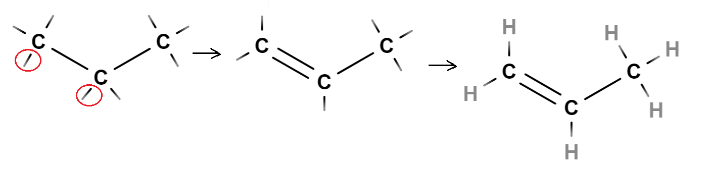

Orgaanisen kemiat mallit
Orgaanisen kemiat mallit#
Hiilen yhdisteitä kuvataan kemiassa molekyylikaavoilla tai rakennekaavoilla. Rakennekaava voidaan esittää myös yksinkertaistetussa muodossa eli viivakaavana. Molekyylikaava sisältää ainoastaan tiedon siitä, montako kappaletta mitäkin alkuainetta molekyyli sisältää. Esim. \(\text{C}_3 \text{H}_6\) sisältää kolme hiiltä ja kuusi vetyä.
Molekyylikaavasta ei välttämättä voi päätellä sitä, millaisia sidoksia atomien välillä on tai missä järjestyksessä atomit ovat. On kuitenkin olemassa vakiintuneita käytänteitä siitä, missä järjestyksessä atomit kirjoitetaan molekyylikaavaan. Esimerkiksi alkoholeihin kuuluu tiettyyn kohtaan molekyyliä vedyn ja hapen yhdistelmä \(\text{OH}\), joka kirjoitetaan molekyylikaavan loppuun, kuten \(\text{C}_4 \text{H}_9 \text{OH}\). Lisäksi atomien keskinäisistä määristä voidaan päätellä, onko yhdisteessä mahdollista olla esim. kaksois- tai kolmoissidoksia.
Rakennekaavassa kuvataan molekyylin atomien järjestys sekä eri sidosten sidostyypit. Rakennekaavaan merkitään atomit niiden lyhenteellä, ja sidoksien tyyppi atomien välisten viivojen lukumäärällä. Rakennekaavan voi piirtää myös kolmiulotteisena.
Viivakaava on yksinkertaistettu rakennekaava. Siinä jätetään merkitsemättä hiilet ja vedyt, mutta kaikki muut alkuaineet (sekä molekyylin kannalta oleelliset vedyt, esim. alkoholeissa olevan \(\text{OH}\)-ryhmän vety) kirjoitetaan näkyviin alkuaineen kemiallisella merkillä. Viivakaavassa sidosta merkitään viivalla, ja sidosten väliset hiilet ovat viivojen välisiä kulmia.

Kuvassa on esitetty eräs mahdollinen rakennekaava, viivakaava ja kolmiulotteinen rakennekaava yhdisteelle, jonka molekyylikaava on \(\text{C}_2\text{H}_5\).
Rakennekaavan tai viivakaavan perusteella yhdisteelle voidaan antaa niin sanottu systemaattinen nimi. Nimen muodostamisen säännöt käsitellään eri yhdistetyyppien yhteydessä. Vastaavasti jos yhdisteen systemaattinen nimi on tiedossa, voidaan sen perusteella piirtää yhdisteen rakennekaava.
Esim. Yhdisteestä tiedetään molekyylikaava \(\text{C}_4 \text{H}_{10}\). Millainen sen rakennekaava voi olla?
Ratkaisu
Piirretään rakennekaava aloittamalla neljän hiilen ketjusta. Piirretään ensin hiilten välille yksinkertaiset sidokset (kuva 1). Myöhemmin niitä voi tarvittaessa muuttaa kaksois- tai kolmoissidoksiksi, jos todetaan, että rakennekaava ei vastaa molekyylikaavaa. Lisätään hiilistä lähteviä sidosviivoja siten, että jokaisesta hiilestä lähtee neljä sidosta (kuva 2). Piirretään jokaisen uuden sidosviivan päähän vety \(\text{H}\) (kuva 3).

Todetaan, että rakennekaava toteuttaa seuraavat ehdot:
hiilten määrä on 4 ja vetyjen määrä on 10
jokaisesta hiilestä lähtee neljä sidosta
Muodostettu rakennekaava on siis mahdollinen.
Sama molekyylikaava voi mahdollistaa monta erilaista rakennekaavaa. Kokeillaan muodostaa toinen versio molekyylistä \(\text{C}_4 \text{H}_{10}\). Piirretään neljä hiiltä hieman erilaiseen järjestykseen (kuva 1). Täydennetään jokaiselle hiilelle neljä sidosta (kuva 2) ja piirretään sidoksien päähän vedyt (kuva 3).

Tässäkin molekyylissä on neljä hiiltä ja kymmenen vetyä, ja jokaisesta hiilestä lähtee neljä sidosviivaa. Molekyylikaava \(\text{C}_4 \text{H}_{10}\) voi siis tarkoittaa tällaistakin rakennetta. Molekyylikaavasta ei voi päätellä, kumpaa molekyyliä tarkoitetaan.
Edelliset rakennekaavat voidaan esittää viivakaavoina seuraavasti:

Esim. Yhdisteestä tiedetään molekyylikaava \(\text{C}_3 \text{H}_6\). Millainen sen rakennekaava voi olla?
Ratkaisu
Aloitetaan piirtämällä kolmen hiilen ketju ja täydennetään siihen sidosviivat siten, että jokaisesta hiilestä lähtee neljä sidosviivaa. Todetaan, että sidosviivoja tuli 8 kpl, mutta vetyjä voi olla molekyylikaavan mukaan vain 6 kpl. Yhdistetään kaksi sidosviivoista (kuvaan rengastetut sidosviivat) toisiinsa, jolloin niistä muodostuu hiilten välinen kaksoissidos. Kaksoissidos voidaan muodostaa mistä tahansa sidosviivoista, jotka ovat vierekkäisissä hiilissä. Lopuksi täydennetään tyhjiin sidospaikkoihin vedyt.

Rakenteen voi piirtää niinkin, että kaksoissidos on kahden oikeanpuoleisen hiilen välissä. Molekyylin kemiallisen käyttäytymisen kannalta ei ole merkitystä, kummassa päässä hiiliketjua kaksoissidos on, sillä molekyylihän voi kääntyä toisin päin.